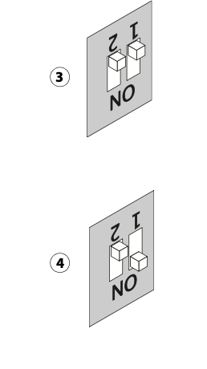

Переустановка сервера Fiery
Гайд
Под VPN качаем:
Fiery USB Setup Tool
Xerox EX-i Print Server Powered by Fiery® System Software ISO v2.1
Xerox EX-i Print Server Powered by Fiery® System Software ISO v2.1
При установке приложение подвисает - ждем
После установки ищем в приложениях Fiery USB Setup Tool
Открываем
Приложение кривоекосое перетягиваем в него файл iso сначала из папки server потом из папки user.
Заметка
Может лагать и не перетягиваеться пробуем закрыать приложение переустанавливать итд
выбираем флешку
Заметка
Если прошивка крашится, пробуем другую флешку
Выключаем питание принтера и сервера печати
Из сервера печти выдергиваем все провода
Вставляем прошитую флешку в любой usb порт
Dip переключатели на лицевой панели устанавливаем 1-on 2- off

Включаем питание тумбелром сверху
Нажимаем кнопку питания
Сервер тупит 1-3 минуты далее начинает по кругу переключать c1-c2-c3 на дисплее
Ждем минут 5-10 сервер выключится
Возвращаем все провода обратно
Включаем сервер кнопкой
Далее ждем минут 15, при этом сервер неоднократно перезагрузится
Выключаем
Включаем вместе с принтером
Готово пароль админа по умолчанию Fiery.1